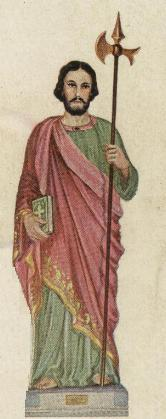
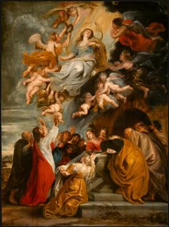
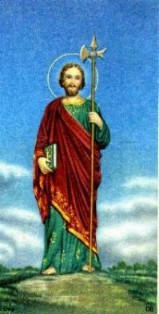

A devoção a São Judas Tadeu, é um fato concreto e admirável, que aconteceu não só no Brasil, como em diversos países do mundo, com uma frequência que entusiasma e contagia, aumentando sempre com o passar dos anos.
O Apóstolo cujo nome lembra o de Judas Iscariotes, o traidor de JESUS, teve sua devoção esquecida durante muitos séculos. Mas a Providência Divina se manifestou no momento oportuno, para exaltar as suas qualidades e notável humildade, transformando-o no querido e poderoso Santo intercessor das “causas impossíveis” , que consegue junto ao CRIADOR as graças necessárias, em benefício de todos aqueles que buscam e procuram o seu inestimável auxílio.
A partir do século 9º, sua devoção começou a crescer na França e depois se estendeu por toda Europa. No Brasil, o culto ao Apóstolo de JESUS, começou após a Segunda Grande Guerra Mundial e alastrou-se com muita rapidez em todos os Estados da Federação Nacional. É patrono de mais de 100 Igrejas.
E não só o povo simples e a multidão trabalhadora tem predileção por ele! Ao longo da história pessoas de todas as classes sociais tem revelado uma apaixonada devoção ao Santo. Assim aconteceu com Reis, rainhas, autoridades civis, militares e religiosas. Santa Gertrudes e São Bernardo de Claraval entre muitos outros Santos, também foram fervorosos cultivadores de seu culto. Santa Gertrudes escrevendo sua biografia, conta que JESUS lhe apareceu aconselhando invocar São Judas Tadeu, até nos "casos mais desesperados". A partir de então, cresceu a fé do povo na especial intercessão do Santo, principalmente nos "casos impossíveis".
 Em verdade, os Santos Apóstolos que viveram na intimidade com NOSSO
SENHOR, merecem nossa especial devoção, não só por suas virtudes pessoais e dons
que receberam do CRIADOR, mas primordialmente pelo fato de terem acompanhado
a Obra de JESUS, vivido e aprendido na escola do Mestre Divino, presenciado uma
quantidade incontável de milagres feitos por ELE: quando restituiu a visão a cegos,
exorcizou pessoas possessas do maligno, curou paralíticos, coxos, leprosos e inclusive
ressuscitou mortos. Foram os Apóstolos que participaram da Última Ceia no Cenáculo
em Jerusalém e presenciaram a Instituição da Sagrada Eucaristia na Primeira Santa
Missa da história, celebrada pela própria vítima perfeita, JESUS Sacerdote Eterno e
Supremo, transformando o pão e o vinho no seu próprio Corpo, Sangue, Alma e
Divindade, Sacramento de Vida e Amor para a humanidade de todas as gerações. E
por isso, por terem acompanhado a Vida de JESUS, são os Santos Apóstolos as
verdadeiras testemunhas da Ressurreição do SENHOR e de sua Gloriosa Ascensão
aos Céus. Assim sendo, honrar os Discípulos de JESUS e prestar-lhes um culto
de louvor, é revelar, sobretudo, que amamos o CRIADOR e compreendemos
o admirável zelo Divino em deixar nos Apóstolos exemplos a serem seguidos
por todos os seus filhos, a fim de que trilhem o caminho do direito, da
justiça e do amor fraterno, e mantenham gravado no coração o conteúdo da
Verdade Cristã.
Em verdade, os Santos Apóstolos que viveram na intimidade com NOSSO
SENHOR, merecem nossa especial devoção, não só por suas virtudes pessoais e dons
que receberam do CRIADOR, mas primordialmente pelo fato de terem acompanhado
a Obra de JESUS, vivido e aprendido na escola do Mestre Divino, presenciado uma
quantidade incontável de milagres feitos por ELE: quando restituiu a visão a cegos,
exorcizou pessoas possessas do maligno, curou paralíticos, coxos, leprosos e inclusive
ressuscitou mortos. Foram os Apóstolos que participaram da Última Ceia no Cenáculo
em Jerusalém e presenciaram a Instituição da Sagrada Eucaristia na Primeira Santa
Missa da história, celebrada pela própria vítima perfeita, JESUS Sacerdote Eterno e
Supremo, transformando o pão e o vinho no seu próprio Corpo, Sangue, Alma e
Divindade, Sacramento de Vida e Amor para a humanidade de todas as gerações. E
por isso, por terem acompanhado a Vida de JESUS, são os Santos Apóstolos as
verdadeiras testemunhas da Ressurreição do SENHOR e de sua Gloriosa Ascensão
aos Céus. Assim sendo, honrar os Discípulos de JESUS e prestar-lhes um culto
de louvor, é revelar, sobretudo, que amamos o CRIADOR e compreendemos
o admirável zelo Divino em deixar nos Apóstolos exemplos a serem seguidos
por todos os seus filhos, a fim de que trilhem o caminho do direito, da
justiça e do amor fraterno, e mantenham gravado no coração o conteúdo da
Verdade Cristã.



Embora São Lucas escreveu em seu evangelho (Lc 6,16): “Judas, filho de Tiago” , a Bíblia de Jerusalém explica o fato mostrando que a intenção do escritor sagrado era dizer “Judas de Tiago” ou seja, “Irmão de Tiago” , de acordo com a colocação de São Mateus (Mt 10,3): “Tiago, o filho de Alfeu, e Tadeu”, ou seja, “e Tadeu seu irmão”.
Estas informações foram extraídas da Escritura Sagrada, nas citações a seguir: (Lc 6,16) (At 1,13) (Mt 10,3) (Mt 13,55) (Mc 3,18) (Mc 6,3).
O livro "A História de José, o Carpinteiro", escrito no século II da era cristã e o "Evangelho de JESUS" denominado "Pseudo Mateus", são apócrifos ou seja, não fazem parte do cânon da Igreja, mas fazem parte de uma lista de livros considerados inspirados pelo CRIADOR, e neles encontramos a afirmação de que Cleófas e Maria de Cleófas tiveram dois filhos: José, conhecido por Barsabás, o Justo, e Salomé, a única mulher, que se casou com Zebedeu, e do casal nasceu dois filhos: Tiago Maior (o mais velho que o outro Tiago) e João Evangelista, os quais, também foram os conhecidos Discípulos de JESUS.
(A imagem acima mostra a Assunção de NOSSA SENHORA aos Céus, observada pelas Santas Mulheres e os Apóstolos, inclusive São Judas)


Originariamente o Novo Testamento foi escrito em
rolos de pergaminhos, nos 
Outro fato que deve ser realçado, é que os primeiros tradutores do aramaico e do hebraico para o idioma grego e mesmo o texto original em grego, abordam os parentes de JESUS de acordo com o pensamento dos escritores inspirados, ou seja, num sentido mais amplo, sem se preocuparem com o parentesco humano, denominando todos, “irmãos do SENHOR”. Significa dizer que irmãos, primos e tios, são também tratados como "irmãos".
Exemplificando o que afirmamos, lê-se no livro do Gênesis, capitulo 13, versículo 8, Abraão que era tio de Lot, na Bíblia edição grega, são considerados “adelfós” , isto é, “irmãos” . Como eles eram na realidade tio e sobrinho, fica clara a intenção do escritor em dar a “adelfós” um sentido mais amplo de “irmãos em DEUS”. Ainda na Bíblia edição grega, no Evangelho escrito por São Lucas, capítulo 8 versículo 19, encontra-se a mesma palavra “adelfós” para designar que MARIA SANTÍSSIMA estava em companhia dos “irmãos do SENHOR”. Ora, as pessoas que acompanhavam a VIRGEM MARIA era os seus parentes e mais precisamente, os primos de JESUS, que eram filhos de Cleófas com a outra Maria.
Da mesma maneira, São Jerônimo ao traduzir a Bíblia
em grego, assim como os originais em hebraico e aramaico, para o latim na famosa
Vulgata, ele procurou ser explícito e fiel ao sentimento de cada escritor nas
variadas passagens dos diversos livros. Fez uma tradução sem se preocupar em
amoldar as descrições da época às realidades da sua atualidade. Preferiu
colocar os escritos, inclusive aqueles que tratam dos parentes de JESUS, com o
mesmo sabor figurado,  conivente com as expressões que se encontram
nos textos originais.
conivente com as expressões que se encontram
nos textos originais.
Foi assim que traduziu para o Latim todas
as palavras "áh"
 do aramaico, e "adelfós" do grego, usando “fratres”
, que significa “irmãos”
. Este fato pode ser observado em todas as Bíblias Sagradas escritas
em Latim, nos casos citados (Gn 13,8) (Lc 8,19), assim como em todos os outros
semelhantes, que envolvem os parentes de JESUS. Esta realidade vem confirmar,
que o “fratres” de
São Jerônimo, significa exatamente “Irmãos
no SENHOR”, embora aquelas pessoas fossem apenas
parentes de JESUS.
do aramaico, e "adelfós" do grego, usando “fratres”
, que significa “irmãos”
. Este fato pode ser observado em todas as Bíblias Sagradas escritas
em Latim, nos casos citados (Gn 13,8) (Lc 8,19), assim como em todos os outros
semelhantes, que envolvem os parentes de JESUS. Esta realidade vem confirmar,
que o “fratres” de
São Jerônimo, significa exatamente “Irmãos
no SENHOR”, embora aquelas pessoas fossem apenas
parentes de JESUS.
Por esta razão, as Bíblias Sagradas em português continuam fieis a tradição, ou seja, trazem também a expressão “Irmãos do SENHOR”, quando se referem aos parentes de JESUS. Outro exemplo que confirma este fato, encontramos na carta de São Paulo aos Gálatas (Gl 1,19).
JESUS não tem irmãos de sangue. ELE Mesmo nasceu pela Vontade do CRIADOR e obra do ESPÍRITO SANTO, permanecendo virgem nossa MÃE SANTÍSSIMA. Da mesma maneira misteriosa em que o VERBO DE DEUS penetrou no interior de MARIA DE NAZARÉ e se alojou no seu útero precioso, consumando uma sagrada gravidez, por determinação do PAI ETERNO, JESUS nasceu para a vida de modo sobrenatural, sem causar a NOSSA SENHORA qualquer dano, em consideração ao seu voto de virgindade perpétua.